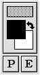
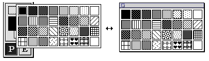
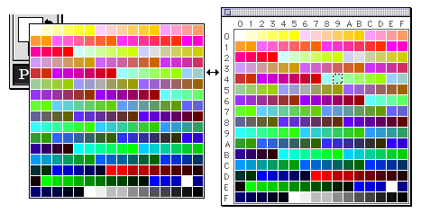

★Graphic Tools Guide
★セガペインタユーザーズマニュアル/
★Graphic Tools Guide
★セガペインタユーザーズマニュアル/
▲
戻る｜
進む▼
セガペインタユーザーズマニュアル/3.ツールパレット
■ボックス
パターン表示ボックス← |  | |
| →前景・背景交換スイッチ |
前景色表示ボックス← | |
| →背景色表示ボックス |
レイヤー切り替えスイッチ← | |
- ●パターン表示ボックス
- 描画パターンをポップアップパレットで指定します。
パレットはティアオフさせて、フローティングウインドウ(パターンウインドウ)にすることができます。

- ●前景色表示ボックス
- ●背景色表示ボックス
- 前景色、或いは背景色をポップアップパレットで指定します。
パレットはティアオフさせて、フローティングウインドウ(パレットウインドウ)にすることができます。

- ●前景・背景交換スイッチ
- 前景色とは背景色を交換します。
- ●レイヤー切り替えスイッチ
- 描画(Paint)レイヤーと編集(Edit)レイヤーを切り替えます。
編集レイヤーはアニメーションデータの登録作業に使用します。
(詳細は「5.アニメーション」参照)
▲
戻る｜
進む▼
★Graphic Tools Guide
★セガペインタユーザーズマニュアル/
Copyright SEGA ENTERPRISES, LTD., 1997